Wine Country Travel Guide
Region in the northern Bay Area of California known worldwide for its wineries, cuisine, Michelin star restaurants, boutique hotels, luxury resorts, historic architecture, and culture
Places to See in Wine Country
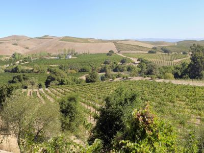
Jim G, CC BY 2.0, via Wikimedia Commons; Image Size Adjusted

Artesa Vineyards & Winery
Modern hilltop facility offering artisanal wine tastings and curated guest experiences surrounded by panoramic vineyard views and contemporary architecture.
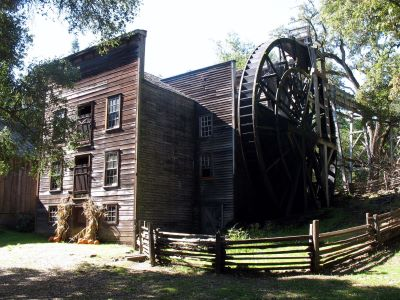
Sanfranman59, CC BY-SA 3.0, via Wikimedia Commons; Image Size Adjusted

Bale Grist Mill State Historic Park
Restored 19th-century water-powered grist mill offering milling demonstrations and historical tours.
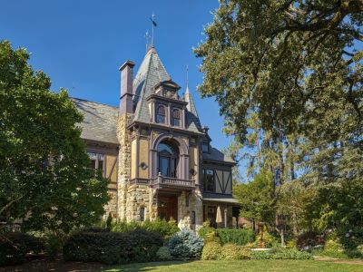
Frank Schulenburg, CC BY-SA 4.0, via Wikimedia Commons; Image Size Adjusted

Beringer Vineyards
Historic winery offering guided tastings, cave tours, and culinary pairings in a Victorian estate setting.
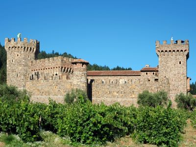
DimiTalen, CC BY-SA 3.0, via Wikimedia Commons; Image Size Adjusted

Castello di Amorosa
Medieval-style Tuscan castle winery offering guided tours, wine tastings, and food pairings in an authentically built fortress.
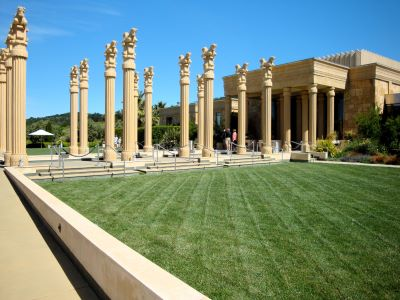
Jim G, CC BY 2.0, via Wikimedia Commons; Image Size Adjusted
.jpg){kind=link}
Darioush Winery
Opulent estate featuring grand architecture, lush gardens, and curated wine tasting experiences rooted in artisanal craftsmanship.
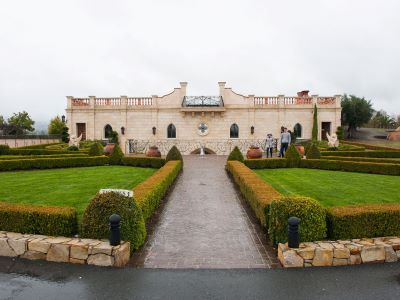
star5112, CC BY-SA 2.0, via Wikimedia Commons; Image Size Adjusted

Del Dotto Estate Winery & Caves
Venetian-style estate offering immersive cave barrel tastings and artisanal wine experiences in a marble-lined cellar adorned with Murano glass chandeliers.
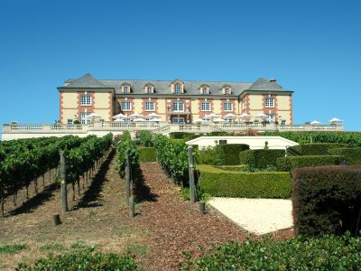
DimiTalen, CC BY-SA 3.0, via Wikimedia Commons; Image Size Adjusted

Domaine Carneros
Elegant château-style winery offering sparkling and still wine tastings with panoramic vineyard views and curated food pairings.
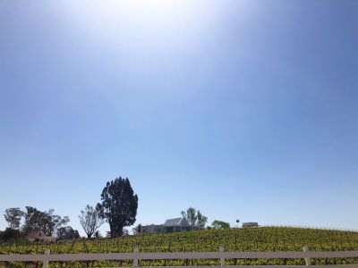
Missvain, CC BY 4.0, via Wikimedia Commons; Image Size Adjusted

Donum Estate
Estate winery offering immersive art and wine experiences with curated tastings, organic vineyards, and one of the world's largest accessible private sculpture collections.

Museum of Sonoma County
French Normandy-style estate offering handcrafted small-lot wines, gourmet picnic grounds, and intimate tasting experiences in a castle-like setting surrounded by Sonoma Valley vineyards.
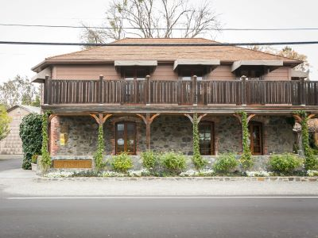
City Foodsters, CC BY 2.0, via Wikimedia Commons; Image Size Adjusted
.jpg){kind=link}
The French Laundry
Renowned fine dining restaurant offering multi-course tasting menus crafted with seasonal ingredients in an intimate, historic setting.
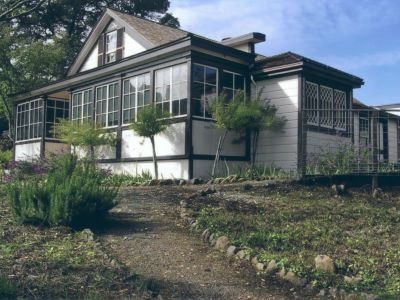
Robert E. Nylund, Public domain, via Wikimedia Commons; Image Size Adjusted

Jack London State Historic Park
Expansive natural and historical preserve featuring literary landmarks, scenic trails, and remnants of early 20th-century ranch life.
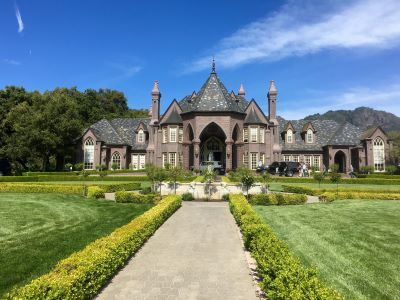
FiendYT, CC BY-SA 4.0, via Wikimedia Commons; Image Size Adjusted

Ledson Winery & Vineyards
French Normandy-style estate offering handcrafted small-lot wines, gourmet picnic grounds, and intimate tasting experiences in a castle-like setting surrounded by Sonoma Valley vineyards.
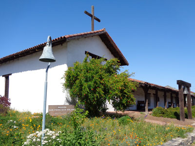
Sarbjit Bahga, CC BY-SA 4.0, via Wikimedia Commons; Image Size Adjusted

Mission San Francisco Solano
The 21st, last, and northernmost mission in Alta California, named for Saint Francis Solanus. It was the only mission built in Alta California after Mexico gained independence from Spain
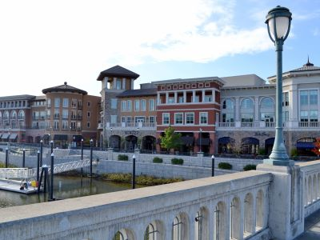
Oleg Alexandrov, CC BY-SA 4.0, via Wikimedia Commons; Image Size Adjusted

Napa, CA
Vibrant cultural hub known for its culinary excellence, wine heritage, and scenic riverfront promenades surrounded by rolling hills and historic architecture.
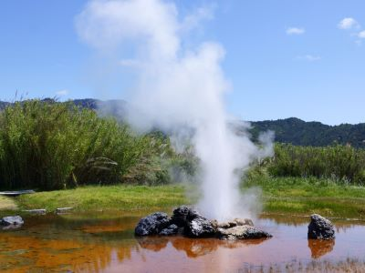
Allie_Caulfield, CC BY 2.0, via Wikimedia Commons; Image Size Adjusted

Old Faithful Geyser of California
Natural geothermal attraction featuring regular eruptions, shaded viewing areas, and a pet-friendly environment with farm animals and picnic grounds.
Robert E. Nylund, Public domain, via Wikimedia Commons; Image Size Adjusted
Regusci Winery
Historic stone winery offering estate-grown wines, scenic gardens, and rustic hospitality on a family-owned ranch in Napa Valley's Stags Leap District.
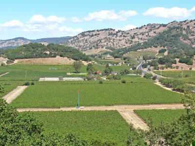
Stan Shebs, CC BY-SA 3.0, via Wikimedia Commons; Image Size Adjusted

Silverado Trail
Scenic two-lane route lined with vineyards and wineries offering a quieter alternative to Highway 29 for wine tasting and countryside exploration.
How to Get There
From San Francisco, CA (50 mi): Take US-101 N to CA-37 E, then merge onto CA-29 N toward Napa; continue for approximately 20 miles to reach downtown Napa.
Overview
Wine Country is Northern California’s world-famous wine region north of San Francisco, with more than 800 wineries in Napa Valley and Sonoma County, plus Mendocino, Lake, and Solano counties. Visitors come for tasting rooms, Michelin-starred restaurants, luxury resorts, and scenic drives through vineyards.
Besides wine tasting, visitors enjoy hot-air ballooning, cycling, spas and hot springs, the Sonoma coast, and the redwoods of the Russian River valley. The renowned cuisine of chefs such as Thomas Keller makes the region a food destination as well.
Geography
Napa Valley is about 30 miles long and only a few miles wide, set between the Mayacamas Mountains and the Vaca Range. Sonoma County has several valleys, including Sonoma Valley, Alexander Valley, Dry Creek Valley, and the Russian River Valley, and it reaches the Pacific. Fog and cool ocean air flow into the valleys at night, and warm, dry summer days create a Mediterranean climate that is ideal for growing grapes.
History
The Pomo, Wappo, Miwok, and Wintun peoples lived here before Spanish missionaries established Mission San Francisco Solano in Sonoma in 1823. George Yount planted the first Napa vineyard in the late 1830s, and Agoston Haraszthy founded Buena Vista Winery in Sonoma in 1857. Prohibition devastated the industry, but it revived after World War II. At the 1976 “Judgment of Paris” tasting, California wines placed ahead of French wines and brought international fame to Napa and Sonoma. Napa had only about 25 wineries in 1975.
Cities and Towns
Napa is the main city of Napa Valley, and the valley’s smaller towns include Yountville, known for its restaurants, St. Helena, and Calistoga, known for its hot springs and mud baths. In Sonoma County, the town of Sonoma is built around a historic plaza, Healdsburg is a stylish town of wine bars and restaurants, Glen Ellen is a small village near Jack London’s home, and Santa Rosa is the largest city.
National Protected Areas
There are no national park units within the main wine valleys, but Point Reyes National Seashore and Muir Woods National Monument are about an hour or so south and can be paired with a wine country trip. Golden Gate National Recreation Area is also within day-trip distance.
State Parks and Historic Sites
Bothe-Napa Valley State Park has redwoods, hiking trails, and a swimming pool, and Robert Louis Stevenson State Park climbs Mount St. Helena. Sugarloaf Ridge State Park and Annadel State Park offer hiking, and Jack London State Historic Park preserves the author’s ranch. Sonoma State Historic Park includes the Mission San Francisco Solano, and Armstrong Redwoods State Natural Reserve and Fort Ross State Historic Park are near the Russian River and the Sonoma coast.
Seasons and Best Time to Visit
Spring brings bud break and vineyard greenery, with mustard flowers blooming in winter and early spring. Summer is warm and dry, with busy tasting rooms and the best weather for ballooning. Harvest, or “crush,” runs from late August through October and is the most popular time, with vineyards turning gold and red in October and November. Winter is quieter, with lower hotel rates, rainy weather, and cozy tasting rooms; wildfire smoke can affect late summer and fall some years.
Things to Do
Discover One of the World's Premier Wine Regions
California Wine Country encompasses several renowned wine-growing regions, including Napa Valley, Sonoma County, Livermore Valley, Paso Robles, Santa Ynez Valley, and Mendocino County. Visitors can explore rolling vineyards, historic wineries, charming towns, scenic countryside, and some of the finest food and wine experiences in the United States.
Tour Award-Winning Wineries and Vineyards
Wine tasting is the signature experience throughout California Wine Country. Visitors can enjoy guided tours, barrel tastings, wine cave experiences, vineyard walks, and food pairings while learning about the winemaking process from grape cultivation to bottling. Regions such as Napa Valley and Sonoma County feature both internationally famous estates and family-owned boutique wineries.
Experience Farm-to-Table Dining
California Wine Country is famous for its culinary scene, featuring Michelin-starred restaurants, farm-to-table dining experiences, artisan food producers, farmers markets, and locally sourced cuisine. Visitors can enjoy gourmet meals paired with regional wines while exploring the area's agricultural heritage.
Explore Historic Wine Country Towns
Charming communities such as Napa, Sonoma, Healdsburg, St. Helena, Calistoga, Yountville, and Los Olivos offer boutique shopping, art galleries, historic architecture, tasting rooms, and cultural attractions. These towns provide an ideal balance of relaxation, hospitality, and wine country ambiance.
Enjoy Scenic Drives and Vineyard Views
Wine Country is home to some of California's most scenic roadways, passing through vineyard-covered valleys, rolling hills, oak woodlands, and mountain landscapes. Popular routes include the Silverado Trail in Napa Valley, Highway 128 in Anderson Valley, and various vineyard roads throughout Sonoma County.
Relax at Spas and Hot Springs
Many Wine Country destinations offer luxury spas, wellness retreats, and hot spring experiences. Calistoga is particularly famous for its geothermal hot springs, mud baths, and resort spas, providing visitors with opportunities to unwind after a day of wine tasting and sightseeing.
Top Trails
Bothe-Napa Valley State Park Trails
Length: Various trails from 1 to 10 miles
Elevation Gain: Minimal to Moderate
Difficulty: Easy to Moderate
Located between St. Helena and Calistoga, Bothe-Napa Valley State Park features redwood groves, creeks, picnic areas, and scenic hiking trails that provide a peaceful escape from the region's vineyards and tasting rooms.
Westwood Hills Park Trail
Length: Approximately 2.5 miles loop
Elevation Gain: Moderate
Difficulty: Easy to Moderate
Overlooking Napa Valley, this trail offers panoramic views of vineyards, rolling hills, and surrounding mountains. Seasonal wildflowers and oak woodlands make it a popular destination for hiking and photography.
Sugarloaf Ridge State Park Trails
Length: Various routes from 2 to 10 miles
Elevation Gain: Moderate to Significant
Difficulty: Moderate
Located in Sonoma County, Sugarloaf Ridge State Park offers scenic mountain trails, waterfalls, wildlife viewing opportunities, and panoramic vistas of Wine Country. The park is a favorite destination for hikers seeking more challenging terrain.
Skyline Wilderness Park Trail System
Length: Various routes from 1 to 25 miles
Elevation Gain: Moderate to Significant
Difficulty: Easy to Difficult
Near Napa, Skyline Wilderness Park provides miles of hiking, mountain biking, and equestrian trails through grasslands, oak woodlands, and ridgelines with expansive views of the surrounding valley and vineyards.
Sources: Visit California and regional wine country tourism resources, including information on Napa Valley, Sonoma County, wine tasting experiences, scenic drives, culinary attractions, vineyard tours, and visitor activities.
https://www.visitcalifornia.com/places-to-visit/wine-country/https://www.visitcalifornia.com/places-to-visit/wine-country/
Additional information verified through Visit Napa Valley and Sonoma County Tourism resources covering wineries, hiking trails, state parks, historic towns, outdoor recreation, spas, and cultural attractions throughout California Wine Country.
https://www.visitnapavalley.com/https://www.visitnapavalley.com/
https://www.sonomacounty.com/https://www.sonomacounty.com/
This article uses material from the Wikipedia article "Wine Country", which is released under the Creative Commons Attribution-Share-Alike License 3.0. Additional information is from Visit California, Visit Napa Valley, Sonoma County Tourism, and California State Parks.
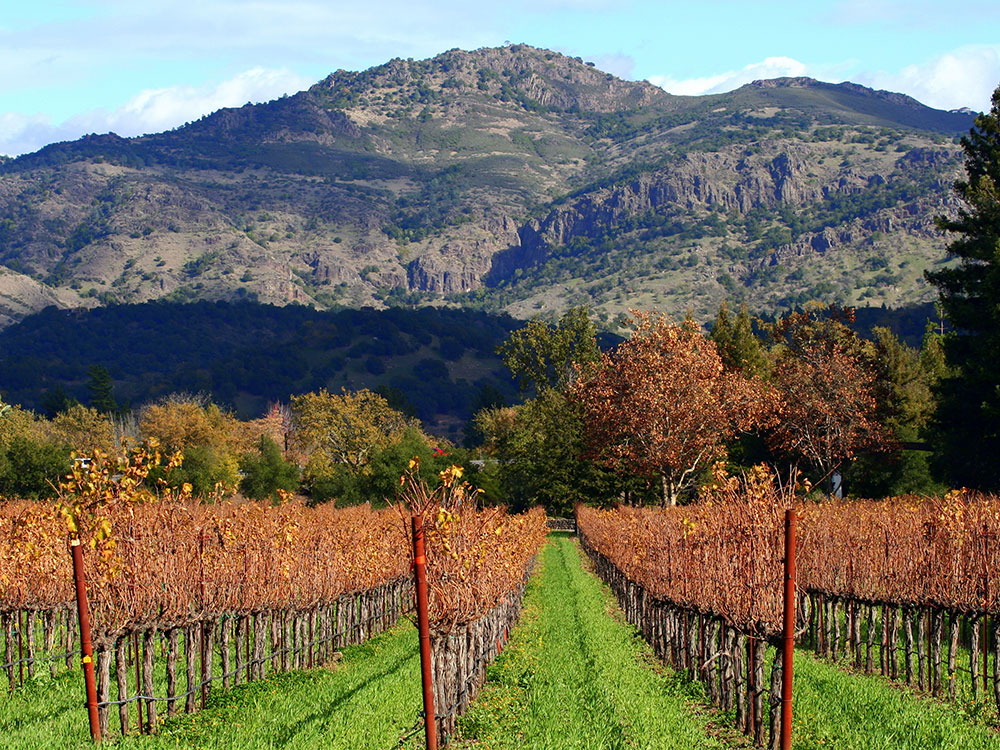

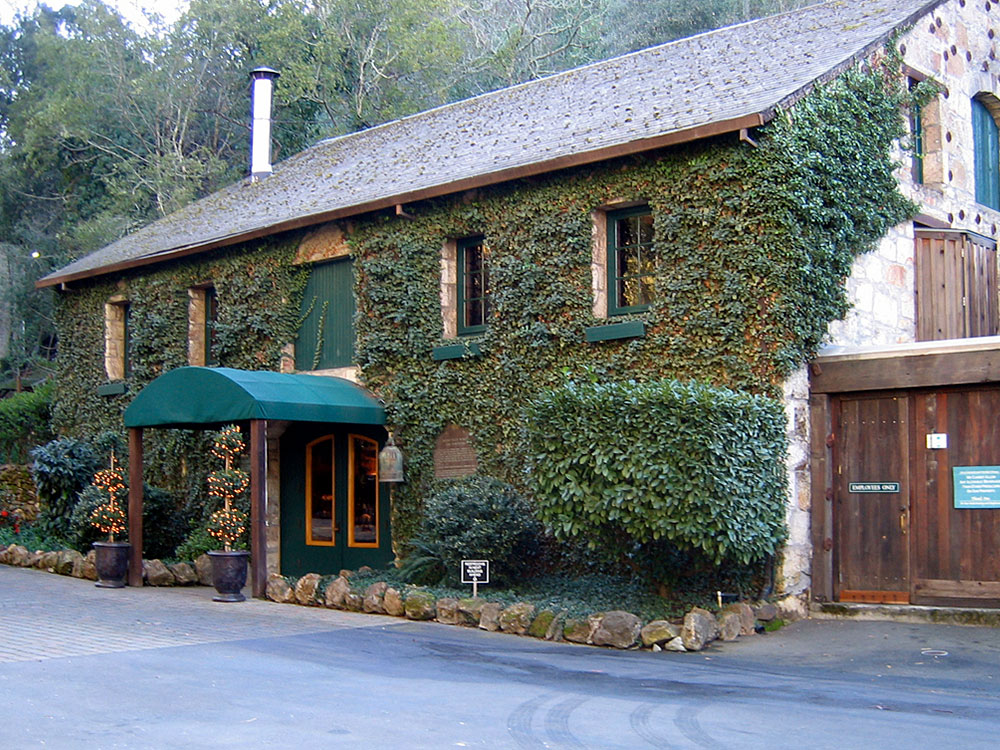
.jpg){kind=link}
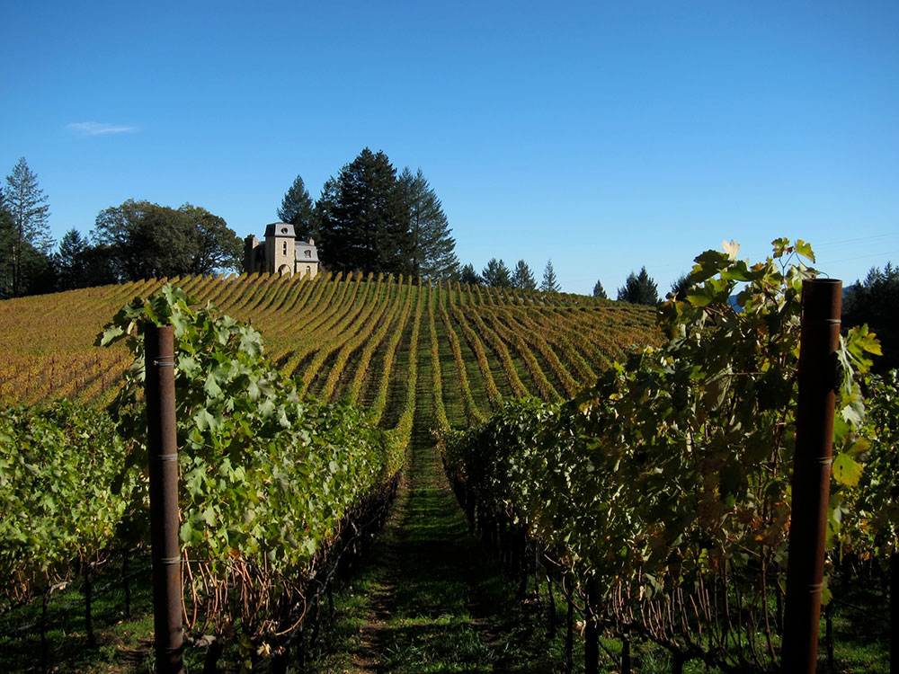

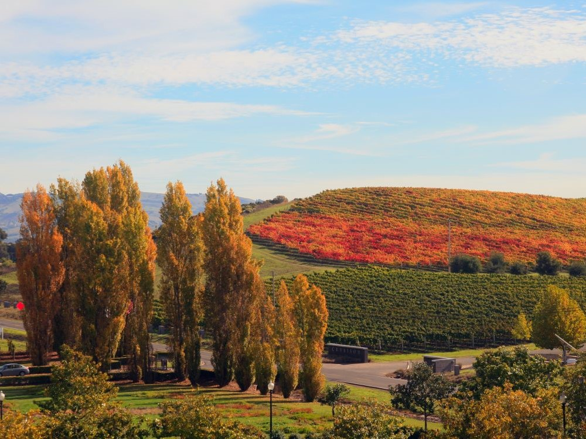
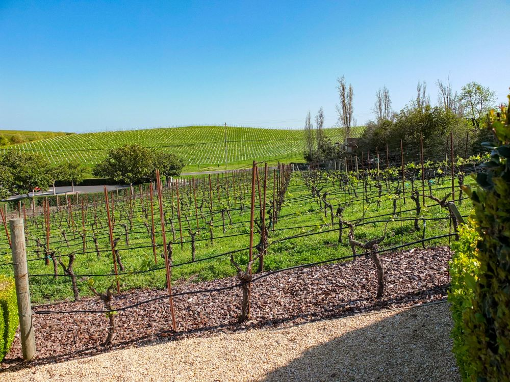
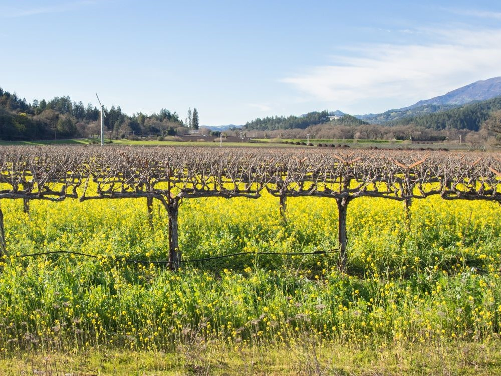
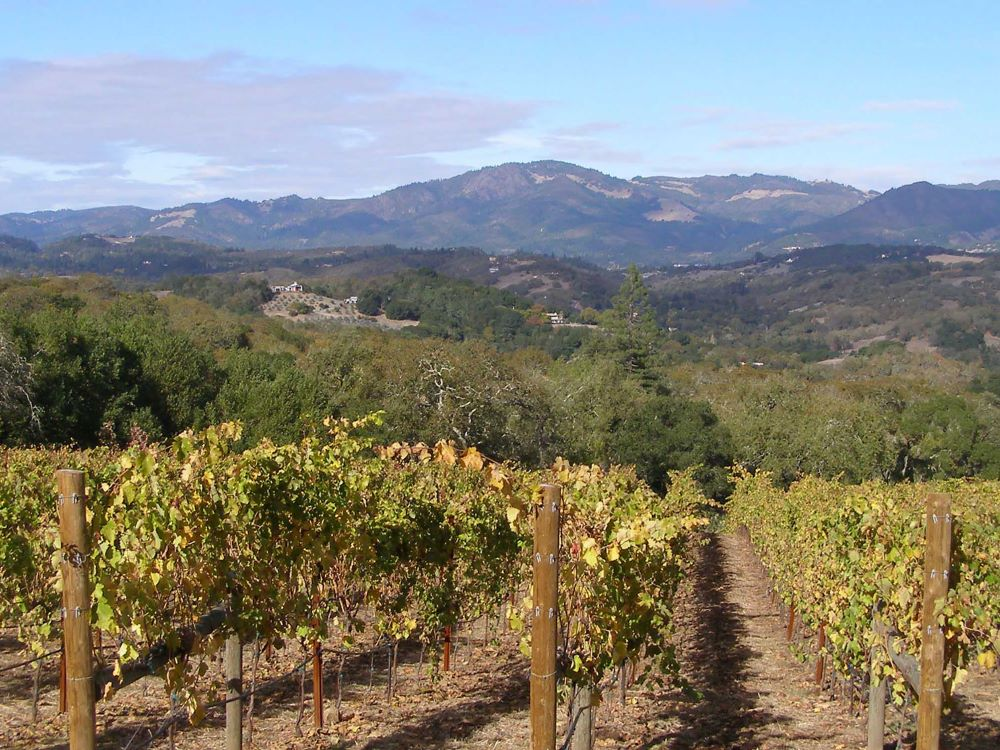